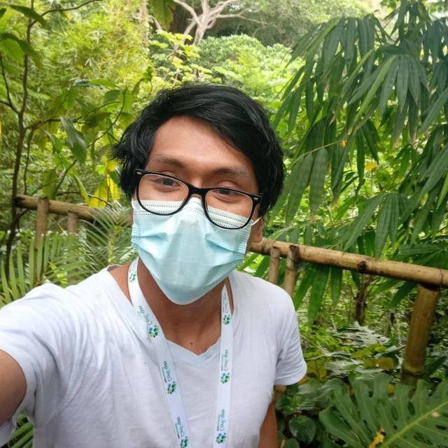

Hi, I’m Antony Barja.
I have a degree in Geographic Engineering from the National University of San Marcos. In my spare time I spend my time reading articles about Geocomputation and Geovisualization. My passion is the use of FOSS4G, and very often I help the QGIS Peru community and collaborate in some open source projects. Finally,I like to share and teach what I learn. Feel free to reach out to me via mail and subscribe to my email newsletter.
Skills
Experience
-
September 2022 - Now
National Institute of Agricultural Innovation (INIA) - Ministry of Agriculture and Irrigation
Thesis student of pregrade
-
December 2021 - Augost 2022
Health Innovation Lab, Cayetano Heredia Peruvian University
Data analyst and researcher in development
-
May 2019 - November 2021
German Red Cross
GIS analyst and data miner - Forecast Based Financing, Lima-Peru
Education
-
2014 - 2018
San Marcos University-UNMSM
Bachelor in Geographical Engineering